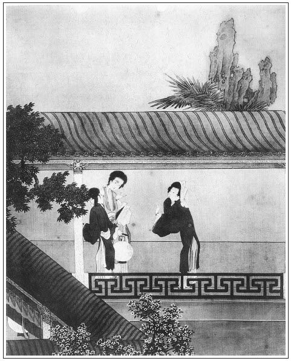

張回此回小文為下回憤深作引也。蓋金蓮之憤，何止此日起！然金蓮生日，西門乃在玉皇廟宿。玉皇廟卻是為瓶兒生子。則金蓮此夕已二十分不快。乃抱孩兒時，月娘之言，西門之愛，俱如針刺眼，爭之不得，為無聊之極思，乃妝丫環以邀之也。雖暫分一夕之愛，而憤已深矣。宜乎後文再奈不得也。文字無非情理，情理便生出章法，豈是信手寫去者？
寫月娘聽王姑子之言，真寫盡尼僧之惡。看者讀此回後，不閉門謝絕此輩者，非人心也。
兩段文字，卻兩番夾寫，如王姑子問月娘喜事一段，下夾瓶兒希寵一段，又寫王姑辭去一段，又夾寫金蓮妝丫環一段也。章法井井不紊。
未必寫裁諸色衣服，照人雙目，蓋預聯姻賣富貴地也。
詞曰：
種就藍田玉一株，看來的的可人娛。多方珍重好支持，掌中珠。
傞亞漫驚新態變，妖嬈偏與舊時殊。相逢一見笑成癡，少人知。
──右調《山花子》

話說當夜月娘和王姑子一炕睡。王姑子因問月娘：「你老人家怎的就沒見點喜事兒？」月娘道：「又說喜事哩！前日八月裡，張旁此處點明「八月」。因買了對過喬大戶房子，平白俺每都過去看。上他那樓梯，一腳躡滑了，把個六七個月身扭掉了。至今再誰見甚麼喜兒來！」王姑子道：「我的奶奶，有七個月也成形了！」月娘道：「半夜裡掉下榪子裡，我和丫頭點燈撥著瞧，倒是個小廝兒。」王姑子道：「我的奶奶，可惜了！怎麼來扭著了？還是胎氣坐的不牢。繡旁開端妙。張夾即插入。你老人家養出個兒來，強如別人。你看前邊六娘，進門多少時兒，倒生了個兒子，何等的好！」月娘道：「他各人的兒女，隨天罷了。」張旁一團醋意。張夾滿腔希福之心。王姑子道：「也不打緊，俺每同行一個薛師父，一紙好符水藥。前年陳郎中娘子，也是中年無子，常時小產了幾胎，白不存，張夾一個也是。也是吃了薛師父符藥，如今生了好不好一個滿抱的小廝兒！張夾二個也是。一家兒歡喜的要不得。只是用著一件物件兒難尋。」張眉可知雪夜燒香，俱出禿奴之計。月娘問道：「什麼物件兒？」王姑子道：「用著頭生孩子的衣胞，拿酒洗了，燒成灰兒，伴著符藥，揀壬子日，人不知，鬼不覺，空心用黃酒吃了。算定日子兒不錯，至一個月就坐胎氣，好不准！」月娘道：「這師父是男僧女僧？在那裡住？」王姑子道：「他也是俺女僧，也有五十多歲。原在地藏庵兒住來，如今搬在南首法華庵兒做首座，好不有道行！他好少經典兒！又會講說《金剛科儀》各樣因果寶卷，成月說不了。專在大人家行走，要便接了去，十朝半月不放出來。」月娘道：「你到明日請他來走走，」王姑子道：「我知道。等我替你老人家討了這符藥來著。止是這一件兒難尋，這裡沒尋處。恁般如此，你不如把前頭這孩子的房兒，借情跑出來使了罷。」張夾可殺。月娘道：「緣何損別人安自己。我與你銀子，你替我慢慢另尋便了。」王姑子道：「這個到只是問老娘尋，他才有。我替你整治這符水，你老人家吃了管情就有。難得你明日另養出來，隨他多少，十個明星當不的月！」月娘吩咐：「你卻休對人說。」王姑子道：「好奶奶，傻了我？肯對人說！」張眉看他禿奴說另養一個，月娘即接言「休對人說」。然則雪夜之說，不拘六人之言，欺人乎？欺天耶？則知燒香一事，明為此班禿奴教唆無疑。月娘等人真是生生世世，我不願一見其人者。張夾映後文與金蓮做。說了一回，方睡了。一宿晚景題過。
到次日，西門慶打廟裡來家，月娘才起來梳頭。玉簫接了衣服，坐下。月娘因說：「昨日家裡六姐等你來上壽，怎的就不來了？」西門慶悉把醮事未了，吳親家晚夕費心，張旁又是一個親家。又照管伯爵。擺了許多桌席──「吳大舅先來了，留住我和花大哥、應二哥、謝希大。兩個小優兒彈唱著，俺每吃了一夜酒。今早我便先進城來了，應二哥他三個還吃酒哩。」告訴了一回。玉簫遞茶吃了。也沒往衙門裡去，走到前邊書房裡，𢱉著床上就睡著了。落後潘金蓮、李瓶兒梳了頭，抱著孩子出來，都到上房，陪著喫茶。月娘向李瓶兒道：「他爹來了這一日，在前頭哩，我叫他喫茶食，他不吃。如今有了飯了。你把你家小道士替他穿上衣裳，抱到前頭與他爹瞧瞧去。」潘金蓮道：「我也去。等我替道士兒穿衣服。」繡眉強插入，沒趣。於是戴上銷金道髻兒，穿上道衣，帶了頂牌符索，套上小鞋襪兒，金蓮就要奪過去。月娘道：「叫他媽媽抱罷。你這蜜褐色桃繡裙子不耐污，撒上點子臢到了不成。」張夾月娘有心。於李瓶兒抱定官哥兒，潘金蓮便跟著，張旁畫。張夾安得不妒。來到前邊西廂房內。書僮見他二人掀簾，連忙就躲出來了。金蓮見西門慶臉朝裡睡，就指著孩子說：「老花子，你好睡！小道士兒自家來請你來了。大媽媽房裡擺下飯，叫你吃去，你還不快起來，還推睡兒！」那西門慶吃了一夜酒的人，丟倒頭，那顧天高地下，鼾睡如雷。
金蓮與李瓶兒一邊一個坐在床上，把孩子放在他面前，怎禁的鬼混，不一時把西門弄醒了。睜開眼看見官哥兒在面前，張旁霎時好夢。穿著道士衣服，喜歡的眉開眼笑。連忙接過來，抱到懷裡，與他親個嘴兒。金蓮道：「好乾淨嘴頭子，就來親孩兒！小道士兒吳應元，你噦他一口，你說昨日在那裡使牛耕地來，今日乏困的這樣的，張旁多少含憤在內，作者筆尖，不知如何落紙。大白日困覺？昨日叫五媽只顧等著你。你恁大膽，不來與五媽磕頭。」繡眉我家心事，只信口戲說出，巧甚，慧甚。張夾每事必尖酸說出，有以刻為言者，必學金蓮者也。西門慶道：「昨日醮事散得晚。晚夕謝將，整吃了一夜。今日到這咱還一頭酒，在這裡睡回，還要往尚舉人家吃酒去。」金蓮道：「你不吃酒去罷了。」西門慶道：「他家從昨日送了帖兒來，不去惹人家不怪！」金蓮道：「你去，晚夕早些兒來家，我等著你哩。」
李瓶兒道：「他大媽媽擺下飯了，又做了些酸筍湯，請你吃飯去哩。」西門慶道：「我心裡還不待吃，等我去喝些湯罷。」於是起來往後邊去了。這潘金蓮見他去了，一屁股就坐在床上正中間，腳蹬著地爐子說道：「這原來是個套炕子。」伸手摸了摸褥子裡，說道：「到且是燒的滾熱的炕兒。」瞧了瞧旁邊桌上，放著個烘硯瓦的銅絲火爐兒，隨手取過來，叫：「李大姐，那邊香幾兒上牙盒裡盛的甜香餅兒，你取些來與我。」一面揭開了，拿幾個在火炕內，一面夾在襠裡，拿裙子裹的沿沿的，張夾淫婦百竅皆描出矣。且薰熱身上。張旁不然，幾乎忘記正月。坐了一回，李瓶兒說道：「咱進去罷，只怕他爹吃了飯出來。」金蓮道：「他出來不是？怕他麼！」於是二人抱著官哥，進入後邊來。良久，西門慶吃了飯，吩咐排軍備馬，午後往尚舉人家吃酒去了。潘姥姥先去了。
且說晚夕王姑子要家去。月娘悄悄張旁悄悄，何意？與了他一兩銀子，叫他休對大師姑說，好歹請薛姑子帶了符藥來。王姑子接了銀子，和月娘說：「我這一去，只過十六日才來。就替你尋了那件東西兒來。」月娘道：「也罷，你只替我幹的停當，我還謝你。」於是作辭去了。看官聽說：但凡大人家，似這等尼僧牙婆，決不可抬舉。在深宮大院，相伴著婦女，俱以談經說典為由，背地裡送暖偷寒，甚麼事兒不幹出來？張旁直繳烹茶一回。張夾故以此為孝哥坐胎之引，所以深罪月娘也。有詩為證：
最有緇流不可言，深宮大院哄嬋娟。
此輩若皆成佛道，西方依舊黑漫漫。
卻說金蓮晚夕走到鏡台前，把鬢髻摘了，打了個盤頭楂髻，把臉搽的雪白，抹的嘴唇兒鮮紅，張旁何處落想？戴著兩個金燈籠墜子，貼著三個面花兒，帶著紫銷金箍兒，尋了一套紅織金祆兒，下著翠藍緞子裙：要妝丫頭，哄月娘眾人耍子。叫將李瓶兒來與他瞧。把李瓶兒笑的前仰後合，張旁瓶兒，一層。說道：「姐姐，你妝扮起來，活像個丫頭。我那屋裡有紅布手巾，替你蓋著頭。等我往後邊去，對他們只說他爹又尋了個丫頭，諕他們諕，繡眉不曰哄而曰諕，更深一步，可思可思。張旁有何可諕。管定就信了。」春梅打著燈籠在頭裡走，走到儀門首，撞見陳敬濟，張旁敬濟一層。笑道：「我道是誰來，這個就是五娘干的營生！」李瓶兒叫道：「姐夫，你過來，等我和你說了，著你先進去見他們，只如此這般。」敬濟道：「我有法兒哄他。」於是先走到上房裡。眾人都在炕上坐著喫茶，敬濟道：「娘，你看爹平白裡叫薛嫂兒使了十六兩銀子，買了人家一個二十五歲，會彈唱的姐兒，剛才拿轎子送將來了。」張旁上房眾人未見面，先自言一層。月娘道：「真個？薛嫂兒怎不先來對我說？」敬濟道：「他怕你老人家罵他，送轎子到大門首，就去了。丫頭便叫他們領進來了。」大妗子還不言語，楊姑娘道：「官人有這幾房姐姐夠了，又要他來做什麼？」張夾玉樓心事也。月娘道：「好奶奶，你禁的！有錢就買一百個，有什麼多？張夾一語道盡。俺們都是『老婆當軍──充數兒』罷了！」繡眉不妒之妒，自不能禁。張旁平日假處畢露，所為簟食豆羹見於色也。玉簫道：「等我瞧瞧去。」只見月亮地裡，原是春梅打燈籠，落後叫了來安兒打著，和李瓶兒後邊跟著，搭著蓋頭，穿著紅衣服進來。慌的孟玉樓、李嬌兒都出來看。繡眉「慌」字應前「諕」字。良久，進入房裡。玉簫挨在月娘邊說道：「這個是主子，還不磕頭哩！」張旁月娘眾人，一層。一面揭了蓋頭。那潘金蓮插燭也似磕下頭去，忍不住撲矻的笑了。玉樓道：「好丫頭，不與你主子磕頭，且笑！」月娘笑了，說道：「這六姐成精死了罷！把俺每哄的信了。」玉樓道：「我不信。」繡旁玉樓不信得妙。張旁一個「不信」，妙。楊姑娘道：「姐姐，你怎的見出來不信？」玉樓道：「俺六姐平昔磕頭，也學的那等磕了頭起來，倒退兩步才拜。」楊姑娘道：「還是姐姐看的出來，要著老身就信了。」張旁一個「信」，更妙。李嬌兒道：「我也就信了。剛才不是揭蓋頭，他自家笑，還認不出來。」繡旁楊姑娘、李嬌兒信得又妙。張旁又一個「也信」，寫得如花如錦。正說著，只見琴童兒抱進氈包來，說：「爹來家了。」孟玉樓道：「你且藏在明間裡。等他進來，等我哄他哄。」張旁又哄西門，一層。
不一時，西門慶來到，楊姑娘、大妗子出去了，進入房內椅子上坐下。月娘在旁不言語。張夾摹神。玉樓道：「今日薛嫂兒轎子送人家一個二十歲丫頭來，張旁減五歲，又妙。說是你叫他送來要他的，你恁大年紀，前程也在身上，還幹這勾當？」西門慶笑道：「我那裡叫他買丫頭來？信那老淫婦哄你哩！」玉樓道：「你問大姐姐不是？丫頭也領在這裡，我不哄你。你不信，我叫出來你瞧。」於是叫玉簫：「你拉進那新丫頭來，見你爹。」那玉簫掩著嘴兒笑，又不敢去拉，前邊走了走兒，又回來了，說道：「他不肯來。」玉樓道：「等我去拉，恁大膽的奴才，頭兒沒動，就扭主子，也是個不聽指教的！」一面走到明間內。只聽說道：張旁只聽，妙絕。「怪行貨子，我不好罵的！人不進去，只顧拉人，拉的手腳兒不著。」玉樓笑道：「好奴才，誰家使的你恁沒規矩，不進來見你主子磕頭。」一面拉進來。西門慶燈影下睜眼觀看，卻是潘金蓮打著楂髻裝丫頭，笑的眼沒縫兒。繡眉已伏遞眼色之脈。張旁見金蓮笑，作錯認。張夾白描。那金蓮就坐在旁邊椅子上。玉樓道：「好大膽丫頭！新來乍到，就恁少條失教的，大剌剌對著主子坐著！」月娘笑道，「你趁著你主子來家，與他磕個頭兒罷。」那金蓮也不動，走到月娘裡間屋裡，一頓把簪子拔了，戴上鬢髻出來。月娘道：「好淫婦，討了誰上頭話，就戴上鬢髻了！」張夾月娘嘲笑，確是月娘，故妙。眾人又笑了一回。月娘告訴西門慶說：「今日喬親家那裡，使喬通送了六個帖兒來，請俺們十二日吃看燈酒。咱到明日，不先送些禮兒去？」西門慶道：「明早叫來興兒，買四盤餚品、一壇南酒送去就是了。到明日，咱家發柬，十四日也請他娘子，並周守備娘子、荊都監娘子、夏大人娘子、張親家母。大妗子也不必家去了。教賁四叫將花兒匠來，做幾架煙火。王皇親家一起扮戲的小廝，叫他來扮《西廂記》。往院中再把吳銀兒、李桂姐接了來。你們在家看燈吃酒，我和應二哥、謝子純往獅子街樓上吃酒去。」說畢，不一時放下桌兒，安排酒上來。
潘金蓮遞酒，眾姊妹相陪吃了一回。西門慶因見金蓮裝扮丫頭，燈下艷妝濃抹，不覺淫心漾漾，不住把眼色遞與他。金蓮就知其意，就到前面房裡，去了冠兒，挽著杭州纘，重勻粉面，復點朱唇。早在房中預備下一桌齊整酒菜等候。不一時，西門慶果然來到，見婦人還挽起雲髻來，張旁是妝丫頭後景。心中甚喜，摟著他坐在椅子上，兩個說笑。不一時，春梅收拾上酒菜來。婦人從新與他遞酒。西門慶道：「小油嘴兒，頭裡已是遞過罷了，又教你費心。」金蓮笑道：「那個大伙裡酒兒不算，這個是奴家業兒，與你遞鍾酒兒，年年累你破費，你休抱怨。」張旁可知妝丫頭，乃無聊之極思也。把西門慶笑的沒眼縫兒，連忙接了他酒，摟在懷裡膝蓋上坐的。春梅斟酒，秋菊拿菜兒。金蓮道：「我問你，十二日喬家請，俺每都去？只教大姐姐去？」西門慶道：「他即下帖兒都請，你每如何不去？到明日，叫奶子抱了哥兒也去走走，省得家裡尋他娘哭。」張旁筆如玉連環，上下雙鉤。金蓮道：「大姐姐他們都有衣裳穿，我老道只有數的那幾件子，沒件好當眼的。你把南邊新治來那衣裳，一家分散幾件子，裁與俺們穿了罷！只顧放著，敢生小的兒也怎的？到明日咱家擺酒，請眾官娘子，俺們也好見他，不惹人笑話。我長是說著，你把臉兒憨著。」張夾要物每在歡時，可歎世情。西門慶笑道：「既是恁的，明日叫了趙裁來，與你們裁了罷，」金蓮道：「及至明日叫裁縫做，只差兩日兒，做著還遲了哩。」西門慶道：「對趙裁說，多帶幾個人來，替你們攢造兩三件出來就夠了。剩下別的慢慢再做也不遲。」金蓮道：「我早對你說過，好歹揀兩套上色兒的與我，我難比他們都有，我身上你沒與我做什麼大衣裳。」西門慶笑道：「賊小油嘴兒，去處掐個尖兒。」兩個說話飲酒，到一更時分方上床。兩個如被底鴛鴦，帳中鸞鳳，整狂了半夜。張夾寫出固妙。不寫又有不寫的妙處。
到次日，西門慶衙門中回來，開了箱櫃，拿出南邊織造的羅緞尺頭來。每人做件妝花通袖袍兒，一套遍地錦衣服，一套妝花衣服。惟月娘是兩套大紅通袖遍地錦袍兒，四套妝花衣服。張眉前總一寫，接手細開，真正文錦光輝奪目，不知特為下回富貴扳親地也。留下春梅等在下回另寫，更妙。在卷棚內，一面使琴童兒叫將趙裁來。趙裁見西門慶，連忙磕了頭。桌上鋪著氈條，取出剪尺來，先裁月娘的：一件大紅遍地錦五彩妝花通袖襖，獸朝麒麟補子緞袍兒；一件玄色五彩金遍邊葫蘆樣鸞鳳穿花羅袍；一套大紅緞子遍地金通麒麟補子襖兒，翠藍寬拖遍地金裙；一套沉香色妝花補子遍地錦羅祆兒，大紅金枝綠葉百花拖泥裙。其餘李嬌兒、孟玉樓、潘金蓮、李瓶兒四個都裁了一件大紅五彩通袖妝花錦雞緞子袍兒，兩套妝花羅緞衣服。孫雪娥只是兩套，就沒與他袍兒。須臾共裁剪三十件衣服。兌了五兩銀子，與趙裁做工錢。一面叫了十來個裁縫在家攢造，不在話下。正是：
金鈴玉墜妝閨女，錦綺珠翹飾美娃。
文回文禹門云：李氏生子，謂諸婦無羨慕心者，非也。謂諸婦無嫉妒心者，亦非也。特羨慕有深有淺，嫉妒有重有輕耳。或羨慕深而嫉妒輕，月娘是也，此尼姑之言，所以易入也，或嫉妒重而羨慕淺，金蓮是也，此官哥之命，所以益危也。惟金蓮能知吳氏之羨慕。故每每言中帶刺，惟月娘能知潘氏之嫉妒，故每每事前留神。若瓶兒，則當局者迷，彼所生之子，愛之誠是也。見西門慶之愛而益愛之，遂以為眾婦固無不愛之也，而不知眾婦惟西門慶之愛而不能不愛，非真愛爾之愛而實愛之也。故瓶兒愛之益切，羨慕之者乃益殷。西門慶愛之愈篤，嫉妒之者乃愈狠。世上妯娌宛若之間，往往愛其所自愛，而忘人之亦各有所愛。
兩所愛者相爭，各有其是非，兩愛之者護短，各有所偏袒。於是嫌隙頓起，詬誶時聞，奴婢遂乘隙而入，弟兄乃因之不和，天下事往往然也。而況群雌守一雄，正是爭強鬥勝之區，此得彼失之會，亦孰肯甘心退後，裹足不前乎？所以同考之士，一人中式，眾皆側目視之。同官之友，一人得缺，眾皆側目聽之。少露得意之色，必群起而攻之矣，略出快心之言，必哄傳而笑之矣。
此一回瓶兒抱兒尋父，雖實出於無心，亦不曾失口，而同往者為金蓮，謂之非希寵，詎可得乎？至於金蓮之市愛，更有不待言者。但希寵二字，尚有不妥，當易曰乞憐，方是丫環本色。而妝丫環本意，及至如願以償，居然討衣要裳，又是丫環本等也。